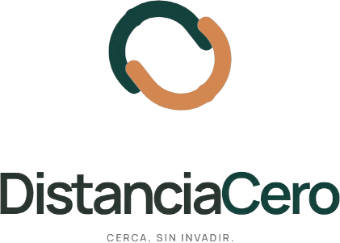
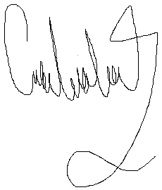
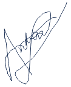

DistanciaCero · Memoria del proyecto final
Reposabrazos Centinela · Proyectos 4 · Ingeniería Mecatrónica · IBERO Puebla
Versión de la página: v9.1 · 24/11/2026 · se actualiza cada semana; historial en el Anexo B
Leyenda de evidencia: MEDIDO (dato propio con archivo) · VERIFICADO (fuente externa con fecha) · ESTIMADO (cálculo con supuestos declarados) · SUPUESTO (sin fuente) · HIPÓTESIS (afirmación sobre usuarios o mercado sin evidencia) · POR VERIFICAR (falta confirmar con autoridad o fabricante) · [MEDIR: …] (campo que se llena al correr la prueba) · [URL_PENDIENTE: …] (enlace que todavía no existe).
Plantilla de cada sección: Versión y fecha · Decisión · Evidencia · Qué cambió · Qué falta. El detalle largo va en los Anexos A–F.
Cómo evaluar esta página
Ruta rápida de 10 minutos: §0 Resumen → §5 Propuesta de valor → §13 Business Blueprint → §17 Integración y pruebas → §18 Pruebas con usuarios → §21 Uso de IA → §20 Pitch y demo
| Criterio de la rúbrica |
Peso |
Se muestra en |
Secciones que lo respaldan |
| Producto físico funcionando con IA |
30 % |
Demo de 7 min |
7, 8, 9, 10, 11, 17, 21 |
| App conectada al producto |
25 % |
Demo de 7 min |
8, 12, 17, 18 |
| Landing de lanzamiento |
15 % |
Demo, tramo de compra |
19 |
| Pitch |
15 % |
Pitch de 3 min y retroalimentación |
0, 2, 5, 13, 15, 20 |
| Documentación técnica y BOM |
10 % |
Esta página |
3, 4, 6, 7, 8, 11, 13–16, 18 |
| Entregables semanales y proceso |
5 % |
Página y repositorio |
1, 10, 21, 22, Anexo B |
Mapa para inversionistas:
| Busca |
Sección |
| Resumen |
§0 |
| Problema |
§2 y §3 |
| Solución |
§5 y §9 |
| Mercado |
§4 |
| Modelo de negocio |
§13 |
| Operación |
§11 |
| Finanzas |
§14 y §15 |
| Legal |
§16 |
| Tracción |
§18 y §19 |
| Equipo |
§1 |
| Riesgos |
§22 |

0. Resumen ejecutivo
Se redacta al final con lo que esté demostrado en §1–§22. Esta es la versión borrador de la Semana 9.
| Campo |
Contenido |
| Nombre y logo |
DistanciaCero · lema: "Cerca, sin invadir." |
| Propuesta de valor (≤ 25 palabras) |
"Para hijos lejos de su padre o madre mayor: la certeza diaria de que todo está bien, sin preguntar y sin que ella haga nada." (25 palabras) |
| Imagen del producto |
[IMAGEN: render del sillón con la placa; Actividad 6, Prompt 7] |
| Mercado alcanzable |
SOM: 850 familias en los años 1–2 (SUPUESTO, §4) |
| Precio |
$4,490 el equipo + $449/mes (IVA por confirmar, §16 R8) |
| Economía unitaria |
Contribución de $342.70/mes; LTV ÷ inversión de 13.8 (paga el hardware) o 3.72 (comodato con DFM), ESTIMADO (§15) |
| Enlaces |
App (prototipo) · Landing · Repositorio · Video del pitch [URL_PENDIENTE] · Demo de respaldo [URL_PENDIENTE] |
| Estado honesto (1 línea) |
Diseño completo y documentado. Integración y pruebas con usuarios en curso: todavía no hay mediciones del sistema completo ni clientes. [ACTUALIZAR al cierre] |
- Versión y fecha: v9.1 · 24/11/2026 (borrador; la versión final se cierra en la Semana B)
- Decisión: presentar DistanciaCero como un servicio de tranquilidad por excepción para hijos e hijas de personas mayores que viven solas: hardware de $4,490 más suscripción de $449 al mes, validado primero con un piloto de 10 familias.
- Evidencia: 3 entrevistas con disposición de pago entre $450 y $700 al mes (§3); economía unitaria ESTIMADA (§15); pruebas T1–T6
[PENDIENTES] (§17).
- Qué cambió: el módulo pasa a SIM7600SA-H (bandas de México), el reporte pasa a cada 30 min (autonomía) y el consentimiento queda como un acto único (Semana 9).
- Qué falta: sistema integrado medido, 5 sesiones con usuarios, landing publicada y video del pitch.
Parte I · Oportunidad y mercado
1. Equipo
- Versión y fecha: v1 · Semana 1 → v9.1 · 24/11/2026
- Decisión: el equipo es de dos personas, Jesús y Andrea, que se reparten 4 roles de cierre: H hardware y firmware · A app y nube · N negocio, usuarios y landing · D documentación, pitch y demo. Las reglas de trabajo quedan firmadas en el acuerdo de colaboración.
- Evidencia: acuerdo de colaboración firmado el 28/08/2026 (PDF); historial de commits del repositorio (Anexo B).
- Qué cambió: en la Semana 9 el trabajo pasó a roles con entregables por semana; cada integrante lleva dos roles.
- Qué falta: los enlaces de "quién hizo qué".
| Integrante |
Rol |
Aportaciones verificables |
| Jesús León Hernández Martínez |
H · Hardware y firmware; A · App y nube |
Autor del sitio con las Actividades 1–9; coautor de la app web (/app/) |
| Andrea Solano López |
N · Negocio, usuarios y landing; D · Documentación, pitch y demo |
Coautora (con Jesús) de la matriz de selección (Semana 2), el PDS (Semana 5), los conceptos (Semana 6) y la app web |
Acuerdo de colaboración: firmado por los dos el 28/08/2026, con roles, reuniones, reglas del repositorio, uso de IA, decisiones, conflictos y firmas → Acuerdo de colaboración (PDF). En la versión publicada se taparon los teléfonos.
2. Problema y oportunidad
- Versión y fecha: v1 · Semana 2 (02/09/2026) → v9.1 · 24/11/2026
- Decisión: atacar el miedo a "la llamada" de los hijos e hijas, no el riesgo médico de la persona mayor. El valor es la certeza sin fricción.
- Evidencia: Actividad 2: 10 prompts (Perplexity y Claude), Pain-Gain en dos versiones, filtro DVN y matriz de selección; 3 entrevistas (§3).
- Qué cambió: el dolor principal pasó de "la caída" (v1 del Pain-Gain) a "el miedo a la llamada" (v2). En la Semana 4 el problema se precisó otra vez: no depende de la distancia, sino de que no haya una red humana local.
- Qué falta: medir la frecuencia del dolor (llamadas al día, minutos) en las sesiones de la §18.
Oportunidad en una oración (Semana 2): "Existe una oportunidad para el hijo o hija que vive lejos de un padre mayor que vive solo, que necesita una señal diaria y confiable de que su papá o mamá está bien y activo, sin tener que preguntar, llamar ni sentirse culpable, porque actualmente la única forma de saberlo es interrumpir su día para llamar, pedirle el favor a alguien más, o vivir con la incertidumbre hasta que algo sale mal."
| Pain-Gain (v2) |
Contenido |
Intensidad o importancia |
| ⭐ D1 |
El miedo a "la llamada": la incertidumbre permanente de cuándo llegará la mala noticia |
Alta |
| D2 |
No hay un sistema económico y no invasivo que avise si algo pasó |
Alta |
| D3 |
No saber si su papá o mamá está bien durante el día |
Alta |
| D4 |
Culpa por haber normalizado la distancia en la comunicación diaria |
Media |
| D5 |
Depender de un vecino o familiar para "checar" |
Media |
| ⭐ G1 |
Confirmación diaria de que su familiar está bien y activo |
Alta |
| G2 |
Dejar de sentir culpa y ansiedad por no estar presente |
Alta |
| G4 |
Recuperar atención mental para su propia vida |
Media |
| G5 |
Evidencia que se puede compartir con hermanos |
Baja o media |
| Etapa |
Alternativas |
Resultado |
| Oportunidades de la Semana 2 |
Prevención de caídas, sarcopenia, osteoartrosis de rodilla, ejercicio en enfermedades crónicas |
Se descartaron como producto; la raíz común es la falta de una señal diaria (insight) |
| Conceptos (filtro DVN) |
A "Gemelo de rutina" ✅✅⚠️ · B "El Seguro que se Olvida que Existe" ✅✅ (1 ⚠️) · C "El Seguro que Paga Otro" (B2B2C) ✅ (2 ⚠️/❌) |
Se eligió B; C se descartó porque el ciclo de venta a aseguradoras (12–24 meses) no cabe en el semestre |
| Matriz de selección |
Pasión ✅ · Habilidad: parcial (riesgo: conectividad celular) · Mercado: 5 de 5 señales |
3/3, sigue adelante |
3. Usuario y evidencia de campo
- Versión y fecha: v1 · Semana 3 (09/09/2026) → v2 · Semana 4 (17/09/2026) → v9.1 · 24/11/2026
- Decisión: el comprador es el hijo o hija de 35 a 55 años, pero no es un solo segmento: son tres perfiles según si hay una red humana local. El usuario pasivo es su papá o mamá de 65 años o más que vive solo.
- Evidencia: 3 entrevistas con citas textuales (Actividad 4, sección de metodología); hipótesis H1, H2 y H3.
- Qué cambió: la capa psicográfica pasó de HIPÓTESIS a CONFIRMADA CON MATIZ. Apareció un tercer actor con poder de veto: el cuidador local (Sonia, la hermana de Ricardo).
- Qué falta: entrevistar a personas mayores sobre su aceptación (S2), llegar a ≥ 5 entrevistas y registrar el consentimiento de las entrevistas en el Anexo D.
|
Mariana, 42 |
Lupita, 37 |
Ricardo, 51 |
| Dónde vive |
Puebla capital, misma ciudad que su mamá |
Chicago, EE. UU.; su mamá (66) vive sola en Puebla |
CDMX; su papá (68) vive en Veracruz |
| Perfil |
Cuidadora local |
Cuidadora en la diáspora |
Cuidador con apoyo local (su hermana Sonia) |
| Contacto habitual |
Llama todos los días, de 7 a 7:30 pm |
Videollamada diaria de 20 a 40 min |
Llama martes y viernes |
| Historial con tecnología |
Nunca ha usado apps ni dispositivos |
Probó y abandonó un botón SOS |
Nunca ha pagado monitoreo |
| Precio "sin pensarlo" |
$450/mes |
US$30–35/mes (≈ $550–650) |
$600–700/mes |
| Cita |
"Si tarda mucho en contestar sí ya se me acelera el corazón, aunque luego resulte que nomás estaba regando las plantas." |
"Vivir en otro país te pone en un estado de alerta constante." |
"El silencio no me pondría nervioso, al contrario, creo que lo preferiría." |
| Hipótesis |
Resultado |
| H1 Dolor: se preocupan fuera de las llamadas |
✓ Confirmada con matiz: depende de la red local, no de los kilómetros |
| H2 Solución: silencio o confirmación diaria |
⚠ Depende del perfil: Lupita pide "algo activo, algo que confirme"; Ricardo prefiere el silencio. El modo de aviso debe ser configurable |
| H3 Pago |
✓ Confirmada: las tres cifras caen dentro o arriba del rango de $300–600 |
Hallazgos que no esperábamos:
1. La autonomía de la persona mayor pesa más que la ansiedad del hijo; Mariana teme que su mamá se sienta vigilada.
2. "Sin wifi" se valida con una frustración real: Mariana tuvo que configurar el router de su mamá a distancia.
3. "Cero acción" se valida con un fracaso ajeno: la mamá de Lupita "nunca se acordaba de traerlo puesto".
4. Un aviso sin alguien cerca que pueda responder genera más ansiedad (Lupita).
5. Ricardo pagaría "para aliviarle la vida a mi hermana".
6. El riesgo puede ser humano: sin el acuerdo de Sonia, Ricardo no lo instalaría.
| Capa del segmento |
Estatus |
| Demográfica: hijos de 35–55 con padre o madre de 65+ que vive solo (ENIGH 2024, INEGI) |
VERIFICADO para la persona mayor |
| Conductual: llamada casi diaria; 1 de 3 ya abandonó un botón SOS |
n = 3 |
| Psicográfica: alerta constante si no hay red local |
CONFIRMADA CON MATIZ (n = 3) |
| Económica: $450–700/mes; quien decide no siempre es quien paga |
n = 3 |
Hipótesis críticas pendientes:
- S1: alguien paga $4,490 por el hardware.
- S2: la persona mayor (y el cuidador local) acepta la placa.
- S3: la rutina del sillón basta para detectar un cambio relevante.
4. Mercado y competencia
- Versión y fecha: v4 · Semana 4 → v9.1 · 24/11/2026
- Decisión: posicionarse como el único pasivo, sin wifi y con objeto cotidiano, frente a botones de pánico, cámaras y la llamada diaria.
- Evidencia: TAM, SAM y SOM sobre ENIGH 2024 (38.8 M hogares) y lista de competidores con precios (Anexo F).
- Qué cambió: se identificó a la llamada diaria (costo cero) como el sustituto más peligroso.
- Qué falta: reemplazar los filtros que propuso la IA (10.9 %, 17.5 %, 85 %, 60 % y 25 %) por fuentes; la disposición de pago (25 %) es el filtro más frágil.
| Nivel |
Universo |
Valor anual |
Estatus |
| TAM |
94,350 personas |
$509.5 M |
SUPUESTO (filtros sin fuente) |
| SAM |
17,832 personas |
$96.3 M |
SUPUESTO |
| SOM (años 1–2) |
850 familias |
$4.59 M |
SUPUESTO |
| Tipo |
Competidor |
Precio |
Fuente o estatus |
| Directo |
Estoy Bien |
$299/mes |
Semana 4 [ENLACE] |
| Directo |
Cuida Más |
$800–928/mes, con call center |
Semana 4 [ENLACE] |
| Directo |
Care 60+ |
Desde $6,588/año |
Semana 4 [ENLACE] |
| Indirecto |
Life360, Family Link, sensores wifi DIY |
— |
Sin precio |
| Sustituto |
Llamada diaria y red informal |
$0 |
El más peligroso |
| Sustituto |
Cuidador por horas |
$9,000–27,000/mes |
Semana 4 |
Lienzo estratégico (4 acciones):
- Eliminar: la interacción de la persona mayor.
- Reducir: el call center.
- Incrementar: el silencio cuando todo está bien.
- Crear: rutina aprendida en un objeto cotidiano, sin wifi.
[IMAGEN: mapa de posicionamiento]
5. Propuesta de valor y oferta
- Versión y fecha: v3 · Semana 4 → v9.1 · 24/11/2026
- Decisión: "Para hijos que viven lejos de su padre o madre mayor, DistanciaCero reemplaza el miedo a 'la llamada' por la certeza diaria de que todo está bien, sin preguntar y sin culpa."
- Evidencia: 3 entrevistas (§3); evaluación IDEO: Insightful ✅, Unique ✅, Targeted ✅ con matiz (Actividad 4).
- Qué cambió: de la v1 (segmento definido por la distancia) a la v3 (red local), con variantes por perfil.
- Qué falta: probar el mensaje en la landing (§19): ¿lo explican con sus palabras en < 30 s?
| Elemento |
Contenido |
| Oferta técnica |
Placa de ~114 × 62 × 15 mm bajo el cojín, LTE sin wifi, avisos por excepción por app y WhatsApp, resumen semanal |
| Nivel de la pirámide de Bain |
Funcional hoy (reduce ansiedad, ahorra tiempo); la meta es Emocional (tranquilidad). El nivel Transformador se descartó por prematuro |
| Error principal de la v1 |
Definir el segmento por la distancia y no por la red humana local |
| Variante por perfil (Semana 4) |
Mensaje |
| Sin red local (tipo Lupita) |
"Para quienes viven lejos y no tienen quién revise a su mamá o papá, DistanciaCero avisa apenas algo cambia, sin depender de que alguien más esté cerca para reaccionar." |
| Con red local fuerte (tipo Ricardo) |
"Para quienes ya tienen quién cuide de cerca a su padre o madre, DistanciaCero le quita a esa persona la carga de estar siempre pendiente, sin reemplazarla." |
| Local, sin red delegada (tipo Mariana) |
"Para quienes viven cerca pero no pueden estar ahí todo el día, DistanciaCero confirma que todo está bien sin pedirle nada a su mamá o papá: ni una app, ni un botón, ni acordarse de nada." |
6. Propiedad intelectual, marca y vigilancia
- Versión y fecha: v1 · Semana 3 → v9.1 · 24/11/2026
- Decisión: usar la marca DistanciaCero (ganó frente a SilencioActivo) con registro en las clases 9 y 42, y el dominio distanciacero.mx.
- Evidencia: análisis de la patente MX 351729 B (detección de caídas en piso): veredicto "fuera", solo con la reivindicación 1.
- Qué cambió: se agregó una variante de handle por la colisión con una banda argentina llamada "Distancia Cero".
- Qué falta: la búsqueda fonética en MARCANET, porque no se ha corrido. La libertad de operación es "alta", pero sobre una búsqueda parcial: falta la ruta IMPI → LATIPAT → Lens.org con 3 a 5 patentes y los códigos IPC G08B21/04xx y A61B5/1118.
| Tema |
Estatus |
| Búsqueda fonética IMPI, clases 9 y 42 |
POR VERIFICAR |
| Libertad de operación |
Alta, con búsqueda parcial |
| Dominio |
[POR VERIFICAR: disponibilidad y compra] |
| Estrategia de protección |
Marca y secreto industrial (parámetros del modelo); patente no prioritaria por ahora |
Parte II · Producto
7. Especificación de producto (PDS)
- Versión y fecha: v1 · Semana 5 → v9.1 · 24/11/2026
- Decisión: 16 requisitos en 4 categorías, cada uno con su prueba. En la Semana 9 se ajustan RD-01 (batería), RR-02 (consentimiento) y la interpretación de RF-02.
- Evidencia: tabla del PDS (Semana 5); pruebas en la §17.
- Qué cambió:
- RD-01: la batería pasa de una 18650 a una LiPo plana de 1.92 Ah.
- RR-02: dice "sin acciones recurrentes"; el consentimiento único está permitido.
- RF-02: se mide desde que el backend decide; con ventanas de 30 min, la latencia de evento a aviso puede llegar a ~40 min.
- Qué falta: ningún requisito está MEDIDO todavía.
| ID |
Requisito |
Meta |
Verificación |
Estatus |
| RF-01 |
Detectar desviaciones de la rutina individual |
Alerta solo ante desviación propia |
Dataset de 14 días |
[PENDIENTE] |
| RF-02 |
Silencio si todo es normal y aviso tras la decisión |
≤ 10 min |
T4, 10 corridas |
[PENDIENTE] |
| RF-03 |
Baseline sin alertas |
10–14 días |
Logs |
[PENDIENTE]; en la demo es precargado |
| RF-04 |
Historial de 30 días sin conexión |
30 días en caché |
Modo avión |
[PENDIENTE] |
| RD-01 |
Autonomía |
≥ 15 días |
T5 |
ESTIMADO en 24.2 días (escenario C) · [MEDIR] |
| RD-02 |
Error del algoritmo |
FP < 5 %, FN < 2 % |
50 eventos |
[MEDIR] |
| RD-03 |
Transmisión |
≤ 30 s |
T4, 20 envíos |
[MEDIR] |
| RD-04 |
Disponibilidad del backend |
≥ 99 % |
Uptime (T6) |
[MEDIR] |
| RI-01 |
Estado entendible |
< 10 s |
§18, tarea 2 |
[MEDIR] |
| RI-02 |
Solo red celular, con TLS |
TLS |
Inspección |
[PENDIENTE] |
| RI-03 |
Onboarding sin la persona mayor |
≤ 10 min |
T3 y §18 |
[MEDIR] |
| RI-04 |
Dos canales de aviso |
≥ 2 |
T1 |
[MEDIR] |
| RR-01 |
Costo recurrente |
$300–600/mes |
Modelo |
Cumple ($449) |
| RR-02 |
Sin acciones recurrentes de la persona mayor |
0 |
Revisión de diseño |
Cumple en diseño; consentimiento único en la instalación |
| RR-03 |
Sin audio ni video |
0 campos |
Auditoría del esquema |
Cumple en diseño (A1) |
| RR-04 |
PCB fabricable en JLCPCB |
Sin BGA ni pitch < 0.5 mm |
DRC |
POR VERIFICAR con el módulo LCC |
8. Arquitectura del sistema
- Versión y fecha: v1 · Semana 5 → v9.1 · 24/11/2026
- Decisión: arquitectura híbrida. El edge agrega los datos y los guarda si no hay señal; la nube aprende la rutina y decide; HTTPS en lugar de MQTT para ahorrar batería.
- Evidencia: diagrama anotado
[IMAGEN: diagrama v9]; justificación de la Semana 5.
- Qué cambió respecto a la Semana 5: se eliminó el PIR (no cabía y no detecta a través del cojín), el módulo pasa del E-H al SA-H, la batería de la 18650 a la LiPo de 1.92 Ah, y el periodo de reporte de 15–30 min a 30 min.
- Qué falta: confirmar la detección solo con el acelerómetro (HIPÓTESIS S3, prueba F1).
| Tramo |
Protocolo |
Decisión |
| MPU6050 → ESP32-S3 |
I²C e interrupción de movimiento |
El ESP32 duerme y despierta con cada movimiento |
| ESP32-S3 → SIM7600SA-H |
UART y comandos AT |
Módem apagado entre reportes |
| Dispositivo → Firebase |
HTTPS POST con JSON sobre TLS, cada 30 min |
Ingesta idempotente con buffer en flash |
| Firestore → Cloud Function |
Trigger al escribir |
z-score por hora; un hueco es "sin reporte" |
| Nube → app |
Listener de Firestore, FCM y WhatsApp |
Dos canales |
| Nube → Claude Haiku |
HTTPS |
Solo el resumen semanal; hay plantilla si falla |
9. Diseño del producto
- Versión y fecha: v1 · Semana 6 → v9.1 · 24/11/2026
- Decisión: se eligió el Reposabrazos Centinela: una placa bajo el cojín, sin LED ni botones.
- Evidencia: matriz de Pugh con deseabilidad 50 % y factibilidad 50 %, con el bastón como referencia: Sillón +80, Posavasos +50.
- Qué cambió: de 90 × 60 × 15 mm en ABS con silicona (Semana 6) a carcasa de PETG en 2 piezas con snap-fit, en dos variantes (Semana 8).
- Qué falta: prototipo impreso y prueba de cierre de 20 ciclos; confirmar si el producto supone un solo sillón de uso constante (HIPÓTESIS).
| Elemento |
Contenido |
| Principio rector |
"Silencio = tranquilidad". Además: affordances, contour bias, constraints y consistencia |
| Tabla morfológica |
7 parámetros × 3 variantes (Actividad 6) |
| Tres conceptos |
Bastón Centinela · Reposabrazos Centinela · Posavasos Guardián. Los otros dos siguen vivos como landings de lista de espera para medir qué objeto prefieren las familias (§19) |
| Render y boceto con cotas |
[IMAGEN: render, Actividad 6 Prompt 7] · [IMAGEN: boceto con cotas, Actividad 6] · planos y STL en la Actividad 8 |
10. Prototipos y evidencia
- Versión y fecha: v1 · Semana 8 → v9.1 · 24/11/2026
- Decisión: cada prototipo responde una pregunta; el prototipo de función (sensado) tiene la prioridad más alta.
- Evidencia: carcasa en 3D con 4 archivos STL (Actividad 8), app en Figma Make (Semana 6), app web (23/11) y landings (24/11).
- Qué cambió: el primer acomodo de la carcasa chocaba (el USB-C quedaba sobre el ESP32); se reacomodaron los componentes.
- Qué falta: el prototipo de función, el impreso de la carcasa y la hoja de observación de la landing (está vacía).
| Prototipo |
Pregunta |
Tipo |
Qué se construyó |
Evidencia |
Aprendizaje → cambio |
| Landing estática |
¿El hijo o hija explica el producto y decide con el precio? |
Negocio, baja |
HTML de un archivo |
PENDIENTE (hoja vacía) |
— |
| Carcasa en 2 variantes |
¿Caben el PCB, el módulo y la batería en una placa que cierra sin herramientas? |
Forma, alta (digital) |
Blender, planos y 4 STL |
Modelo 3D |
Se reacomodaron componentes; el JST se movió 1 mm |
| App en Figma Make |
¿Los estados se entienden? |
Interfaz, media |
Pantallas con datos de ejemplo |
Actividad 6, Prompt 8 |
Se agregaron el círculo de cuidado y la vista para el cuidador local |
| App web (23/11/2026) |
¿El flujo completo (onboarding → estado → alerta → pausa) se entiende y se conecta a un dispositivo? |
Interfaz y función, media |
HTML de un archivo con modo demo y modo "dispositivo real" por MQTT |
Prototipo |
Se agregó "Sin conexión" distinto de "Alerta"; el modo de aviso es configurable (H2) |
| Landings (24/11/2026) |
¿Cuál de los tres objetos piden más las familias? |
Negocio, media |
3 landings con formulario que guarda el campo producto |
[URL_PENDIENTE] · [MEDIR: registros por producto] |
— |
| Función (sensado) |
¿El acelerómetro bajo el cojín distingue sentarse de un golpe? |
Función, alta |
[POR CONSTRUIR] |
[MEDIR: F1] |
— |
[IMAGEN: línea de tiempo con fotos]
11. Manufactura, DFM y circularidad
- Versión y fecha: v1 · Semana 5 → v3 · Semana 8 → v9.1 · 24/11/2026
- Decisión: módulo celular en formato LCC soldado al PCB propio y carcasa PETG de 2 piezas; volumen de 10 unidades para el piloto.
- Evidencia: costo unitario de $4,158 → $2,072 con DFM (BOM × 1.40); el módulo explica el 87 % del ahorro.
- Qué cambió: el E-H se reemplaza por el SA-H (Semana 9), así que la línea del módulo y el ahorro DFM quedan POR RECOTIZAR.
- Qué falta: cotizar el SA-H en LCC; cotizar las 5 líneas que siguen estimadas; tiempo de ensamble medido.
| Componente |
Especificación |
Precio unitario |
Proveedor |
Lead time |
Estatus |
| Módulo celular |
Antes SIM7600E-H LCC ($805) → ahora SIM7600SA-H LCC |
[COTIZAR] |
[ ] |
[ ] |
POR VERIFICAR |
| ESP32-S3 |
Módulo, 8 MB flash |
~$120 |
[ ] |
[ ] |
ESTIMADO |
| MPU6050 (GY-521) |
Acelerómetro y giroscopio |
~$60 |
[ ] |
[ ] |
ESTIMADO |
| LiPo 1.92 Ah |
52 × 34.5 × 10.8 mm, con documentos UN 38.3 |
[ ] |
[ ] |
[ ] |
ESTIMADO |
| PCB + PCBA |
2 capas |
~$250 |
JLCPCB |
[ ] |
ESTIMADO |
| Carcasa |
PETG, 2 piezas, FDM |
~$70 |
Propia |
— |
ESTIMADO |
Proceso de manufactura: PCB y PCBA en JLCPCB → carcasa impresa en FDM → ensamble manual (~9 min por unidad, ESTIMADO) → prueba de humo con reporte al backend.
Circularidad (4 preguntas):
| Pregunta |
Respuesta |
Estatus |
| ¿Los componentes son accesibles? |
Snap-fit sin pegamento ni tornillos |
Cumple |
| ¿Los módulos se reemplazan? |
Batería con JST y sensor en header; ESP32 y módem soldados |
Parcial |
| ¿Los materiales se identifican? |
PETG con marcado en relieve; falta el código de reciclaje |
Parcial |
| ¿Se actualiza sin reemplazarse? |
Por USB-C; falta la actualización remota (partición OTA) |
Parcial |
Cómo reproducir una unidad: [ENLACE: Anexo C, paso a paso].
12. App conectada
- Versión y fecha: v1 · Semana 6 (Figma Make) → v2 · 23/11/2026 (app web) → v9.1 · 24/11/2026
- Decisión: app web de un solo archivo con modo demo y modo dispositivo real. Muestra estados claros sin lenguaje médico y separa "Sin conexión" de "Alerta".
- Evidencia: prototipo publicado, código en
docs/app/index.html.
- Qué cambió: de pantallas estáticas en Figma Make a una app que funciona en el navegador, guarda su estado y recibe datos del dispositivo por MQTT.
- Qué falta:
- Decidir el protocolo. La app usa MQTT en un broker público (
broker.hivemq.com), pero la §8 dice HTTPS → Firestore → FCM. O se documenta MQTT como decisión de la demo, o se migra a Firestore.
- La vista del adulto mayor ("Estoy bien", "Llámame", "Necesito ayuda") choca con RR-02 y con R5. Hay que presentarla como opcional o quitarla.
- Fuente de las alertas. En modo real la alerta usa un umbral fijo de 4 h; hay que conectarla al z-score de la nube o declararlo.
- Capturas de los 5 estados y README.
| Elemento |
Contenido |
| Flujo de usuario |
Onboarding en 5 pasos (tu nombre y a quién cuidas → ¿alguien lo visita seguido? → objeto: sillón, bastón o portavasos → escanear el código del sensor → probar la detección) → Inicio → Alerta → acción (llamar, avisar al contacto local, marcar falsa alarma) |
| Estados |
Todo bien · Más tranquilo de lo usual · No detectamos actividad · Perdimos contacto con el sensor · Avisos en pausa · Esperando al sensor |
| Configuración |
Modo de aviso (solo excepción o con confirmación diaria), umbral, horario de no molestar, resumen semanal, círculo de cuidado con roles, pausa con motivo (viaje, hospitalización, visita, cambio de mueble) |
| Protocolo y datos |
Modo real: MQTT sobre WebSocket con temas distanciacero/<id>/…; estado guardado en localStorage; exporta el historial en JSON |
| Cuenta |
Plan Tranquilidad $449/mes ("precio del modelo de negocio, sin IVA; datos de pago de ejemplo") |
| Capturas |
[IMAGEN ×5: estados] |
| Cómo correrla |
Abrir https://jesushernandez2005.github.io/Proyecto4/app/ en el celular; para el modo real: Ajustes → Conexión → broker MQTT |
| Repositorio |
jesushernandez2005/proyecto4 · commits: [ ] |
| Limitaciones conocidas |
Broker público sin autenticación (solo para la demo); datos solo en el navegador; las notificaciones dependen del permiso del navegador; sin WhatsApp real |
Parte III · Negocio
13. Business Blueprint
- Versión y fecha: v1 · Semana 7 → v9.1 · 24/11/2026
- Decisión: hardware de venta única más suscripción mensual; comodato como plan B si el precio del hardware no se acepta.
- Evidencia: benchmarks de Medical Guardian, Ring y CarePredict (Semana 7).
- Qué cambió: se agregó el escenario de comodato con DFM (Semana 9).
- Qué falta: las 8 cajas no quedaron documentadas en la Semana 7; la tabla siguiente es el borrador que hay que validar.
| Caja |
Contenido |
Sección |
| Cliente |
Hijo o hija de 35 a 55 años sin red local |
§3 |
| Propuesta de valor |
Certeza diaria sin preguntar |
§5 |
| Canales |
Landing, referidos y comunidades de cuidadores |
§15 |
| Relación |
Aviso por excepción y resumen semanal |
§12 |
| Ingresos |
$4,490 + $449/mes |
§14 |
| Recursos clave |
Hardware, modelo de rutina y datos |
§8, §11 |
| Actividades clave |
Fabricación, instalación guiada y soporte |
§11 |
| Costos |
BOM, SIM, nube, soporte y CAC |
§14 |
| Benchmark |
Modelo |
Precio |
Fuente |
| Medical Guardian |
Equipo + cuota (mínimo 3 meses) |
US$149.95–199.95 + US$31.95–49.95/mes |
seniorliving.org, 25/08/2026 |
| Ring |
Hardware + planes en capas |
US$4.99, 9.99 y 19.99/mes |
security.org, 28/09/2026 |
| CarePredict |
Hardware + servicio (B2B) |
Sin precio público |
Comunicado del 30/03/2022 |
14. Costos, precio y viabilidad financiera
- Versión y fecha: v1 · Semana 7 → v9.1 · 24/11/2026
- Decisión: $4,490 + $449/mes; desarrollo estimado en 5 ciclos ($71,540); tasa de descuento del 15 % anual.
- Evidencia: modelo financiero en el Anexo E (fórmulas visibles).
- Qué cambió: el costo unitario estimado bajó de $4,158 a $2,072 (DFM); el costo de la IA bajó a ~$0.03 por usuario al mes (Haiku 5.5, ESTIMADO).
- Qué falta: el precio basado en valor; el costo medido de la IA; si los precios incluyen IVA (§16, R8); el VPN con el módulo SA-H.
| Concepto |
Valor |
Estatus |
| Costo de desarrollo (mínimo / promedio / máximo) |
$42,924 / $71,540 / $114,464 (3, 5 y 8 ciclos de $14,308) |
ESTIMADO |
| Cost-plus del 40 % |
$5,821 por el hardware |
ESTIMADO |
| Precio basado en valor |
[PENDIENTE]; las entrevistas sugieren $450–700/mes |
HIPÓTESIS |
| Equilibrio del desarrollo |
9.7 unidades (24 meses, sin cancelación) · ≈ 15 unidades (24 meses, 3 % de cancelación) |
ESTIMADO |
| Flujo a 12 meses |
−$67,499; pico de −$73,001 en el mes 6; recuperación en el mes 21 |
ESTIMADO |
| VPN (15 % anual) |
12 meses: −$68,041 · 24 meses: +$46,404 · con tipo de cambio FIX y 3 % de cancelación: −$15,459 |
ESTIMADO |
| Costo de la IA por usuario al mes |
~$0.03 (cota usada en el modelo: $0.14) |
ESTIMADO · [MEDIR] |
Tablas CREAR y DISTRIBUIR: 17 costos clasificados, 5 de ellos determinantes (D) → Anexo E.
15. Go-to-market y economía unitaria
- Versión y fecha: v1 · Semana 9 · 24/11/2026
- Decisión: cliente #1 = hijo o hija sin red local, en Puebla y CDMX. Canal: landing + referidos. Primer paso: piloto de 10 familias en comodato.
- Evidencia: Actividad 9, §3 (aritmética completa).
- Qué cambió: se agregaron el análisis de sensibilidad, el efecto del IVA y la meta de clientes para recuperar el desarrollo.
- Qué falta: el CAC y la cancelación reales (son SUPUESTOS); medir la conversión de la landing.
| Métrica |
Valor |
Estatus |
| CAC |
$1,000 |
SUPUESTO |
| Contribución mensual |
$342.70 |
ESTIMADO |
| Cancelación / vida media |
3 % / 33.3 meses |
SUPUESTO |
| LTV |
$11,423 |
ESTIMADO |
| LTV ÷ inversión · payback |
13.8 · 2.4 meses (paga el HW) · 2.21 · 15.1 (comodato) · 3.72 · 9.0 (comodato con DFM) |
ESTIMADO |
| Lo que más mueve el resultado (±25 %) |
Precio de la suscripción y, en segundo lugar, la cancelación |
ESTIMADO |
| Clientes para recuperar los $71,540 |
≈ 15 (costo actual) · ≈ 10 (DFM) |
ESTIMADO |
Plan del piloto: 10 familias · 4 semanas · comodato · consentimiento firmado. Éxito si: ≥ 6 de 10 aceptan pagar $449/mes al terminar, o ≥ 3 aceptan comprar el equipo. [FECHAS]
16. Regulación y legal
- Versión y fecha: v1 · Semana 9 · 24/11/2026
- Decisión: piloto de ≤ 10 unidades sin venta mientras se resuelven la homologación, la privacidad y las NOM. El producto se comunica como "no es un dispositivo médico".
- Evidencia: checklist de 14 temas con fuentes (Actividad 9, §4).
- Qué cambió: se descubrió que el E-H no cubre las bandas de México y que la rutina podría contar como un dato sensible.
- Qué falta: todos los puntos POR VERIFICAR, en particular R1 (CRT), R3 (consentimiento por escrito), R7 (UN 38.3) y R8 (precio con IVA).
| Tema |
Estatus |
Tema |
Estatus |
| R1 Homologación (CRT) |
POR VERIFICAR |
R8 Precio con IVA (LFPC) |
POR VERIFICAR |
| R2 Bandas (SA-H) |
VERIFICADO en la hoja de datos |
R9 Términos de la suscripción |
POR VERIFICAR |
| R3 Datos personales (LFPDPPP 2025) |
Ley VERIFICADA; alcance POR VERIFICAR |
R10 Licencias de software |
POR VERIFICAR |
| R4 Transferencia internacional |
POR VERIFICAR |
R11 Términos de Anthropic y WhatsApp |
POR VERIFICAR |
| R5 No es dispositivo médico (COFEPRIS) |
POR VERIFICAR |
R12 Economía circular |
Ley VERIFICADA; obligación POR VERIFICAR |
| R6 NOM-001-SCFI |
POR VERIFICAR |
R13 Marca IMPI |
POR VERIFICAR |
| R7 Batería (IEC 62133-2, UN 38.3) |
POR VERIFICAR |
R14 Exportación |
No aplica |
Aviso de privacidad y consentimiento: [ENLACE: aviso de privacidad] · [ENLACE: formato de consentimiento de la persona mayor].
Parte IV · Validación y lanzamiento
17. Integración y pruebas del sistema
- Versión y fecha: v1 · Semana 9 · 24/11/2026
- Decisión: 4 fronteras con registros y 6 pruebas ordenadas de la más barata a la más cara; RD-02 se prueba aparte con un dataset.
- Evidencia:
[PENDIENTE: CSV y videos de T1–T6 en el Anexo D].
- Qué cambió: se agregaron la degradación sin red y sin IA y la regla "hueco ≠ anomalía".
- Qué falta: todas las mediciones. La frontera más frágil es la F2 (módem, batería y red).
| Prueba |
Criterio |
Resultado |
Evidencia |
| T1 Falla de canal y de IA |
Aviso por el otro canal en ≤ 10 min; plantilla si falla Haiku |
[MEDIR] |
[ ] |
| T2 Desconexión de 10 min |
0 reportes perdidos; recuperación en ≤ 60 s |
[MEDIR] |
[ ] |
| T3 Instalación sin ayuda |
≤ 10 min |
[MEDIR] |
[ ] |
| T4 Latencia |
≤ 30 s (20/20) · ≤ 10 min (10/10) |
[MEDIR] |
[ ] |
| T5 Autonomía |
≤ 4.27 mA, que da ≥ 15 días |
[MEDIR] (ESTIMADO: 2.64 mA, 24.2 días) |
[ ] |
| T6 Operación de 48 h |
0 reinicios, 0 reportes perdidos, ≥ 99 % de disponibilidad |
[MEDIR] |
[ ] |
| RD-02 (dataset) |
FP < 5 %, FN = 0 de 25 |
[MEDIR] |
[ ] |
Bugs y diagnóstico: [tabla: síntoma → hipótesis → prueba → causa → corrección → commit]
Problemas conocidos: [ ]
Lista "listo para la demo": ☐ T1–T6 aprobadas · ☐ firmware congelado (demo-freeze) · ☐ 3 ensayos · ☐ video de respaldo · ☐ hotspot de reserva · ☐ baseline precargado documentado
18. Pruebas con usuarios
- Versión y fecha: v1 · Semana 9 · 24/11/2026
- Decisión: 5 sesiones de 30 min (3 del segmento y 2 de otros equipos) con 3 tareas: instalar, interpretar estados y encontrar el precio. A las personas mayores solo se les consulta la aceptación.
- Evidencia: protocolo y hoja de observación (Actividad 9, §2); datos crudos en el Anexo D.
- Qué cambió: la señal de negocio se separa en opinión y compromiso (pre-registro < referido < fecha de piloto < anticipo).
- Qué falta: correr las 5 sesiones.
| Tarea |
Éxito sin ayuda (n/5) |
Tiempo mediano |
SEQ promedio |
| Instalar y vincular |
[ ] |
[ ] |
[ ] |
| Interpretar estados |
[ ] |
[ ] |
[ ] |
| Encontrar el precio y apartar |
[ ] |
[ ] |
[ ] |
Hallazgos (crítico, mayor y menor, con n y cita): [ ]
Cambios realizados: [ ]
Señal de negocio: [ ] pre-registros · [ ] referidos · [ ] fechas de piloto · [ ] anticipos
19. Landing de lanzamiento
- Versión y fecha: v1 · Semana 8 (HTML estático) → v2 · 24/11/2026
- Decisión: 3 landings con el mismo diseño. El sillón usa un CTA único ("Aparta tu lugar en el piloto"); el bastón y el portavasos usan "Únete a la lista de espera" y se presentan como conceptos en validación. Las tres mandan el campo
producto para comparar la demanda.
- Evidencia: código en
docs/DistanciaCero/landing/ (Anexo B); prompt de construcción (Actividad 9, §6.2).
- Qué cambió: se agregaron el aviso de privacidad, la leyenda "no es un dispositivo médico", la analítica sin cookies y la imagen para redes (1200×630). No hay testimonios inventados: se usan los datos reales de las 3 entrevistas.
- Qué falta: publicarlas; conectar el formulario (
FORM_ENDPOINT), el correo y GoatCounter; decidir el precio con IVA; medir.
| Elemento obligatorio |
Sillón (principal) |
| URL publicada |
https://jesushernandez2005.github.io/Proyecto4/DistanciaCero/landing/ |
| Headline |
"Saber que tu mamá está bien, sin tener que llamarle." |
| Imagen |
Ilustración del sillón con la placa y un teléfono que dice "Sin avisos hoy" |
| Beneficios (3) |
Ella no hace nada · Funciona sin wifi · Te avisa solo cuando importa |
| Precio visible |
$4,490 + $449/mes; $9,878 el primer año (más IVA, POR VERIFICAR) |
| CTA único |
"Aparta tu lugar en el piloto" |
| Metadatos y Open Graph |
<title>, description de 145 caracteres, og:title, og:description, og:image de 1200×630, og:url, Twitter card |
| Métricas |
Visitas [ ] · clics en el CTA [ ] · pre-registros [ ] · conversión [ ] % · periodo [ ] |
| Prompt utilizado |
Actividad 9, §6.2 |
20. Pitch y demo
- Versión y fecha: v1 · Semana 9 · 24/11/2026
- Decisión: pitch de 335 palabras (~2:35) que abre con la cita real de Mariana y cierra con "el silencio significa tranquilidad"; demo en 6 tramos con Plan B, declarando el baseline precargado.
- Evidencia: guiones completos (Actividad 9, §5).
- Qué cambió: la apertura usa la cita textual de Mariana (antes decía, por error, que vivía lejos de su mamá: vive en la misma ciudad). Las afirmaciones sin evidencia se marcaron P1–P9 y el tramo de tracción dice con honestidad "todavía no tenemos clientes".
- Qué falta: el video del pitch, 3 ensayos de la demo y el video de respaldo.
| Entregable |
Enlace |
| Video del pitch (3 min) |
[URL_PENDIENTE] |
| Guion del pitch |
Actividad 9, §5.1 |
| Guion de la demo (7 min) con Plan B |
Actividad 9, §5.2 |
| Video de respaldo de la demo |
[URL_PENDIENTE] |
| Preguntas difíciles (Q1–Q10) |
Actividad 9, §5.3 |
Parte V · Cierre
21. Uso de IA en el proyecto
- Versión y fecha: v1 · Semana 9 · 24/11/2026
- Decisión: en el producto, la IA estadística (z-score por persona y por hora) decide, y Claude Haiku solo redacta el resumen semanal. Si la IA falla, hay plantilla y las alertas no dependen de ella.
- Evidencia: costo ESTIMADO de ~$0.03 por usuario al mes;
[MEDIR: tokens promedio de 10 resúmenes].
- Qué cambió: se registran los tokens de cada llamada en
model_runs.
- Qué falta: medir FP y FN, medir los tokens y documentar el error de la IA en el proceso.
IA en el proceso: 5 prompts que cambiaron el proyecto
| # |
Qué se pidió |
Qué respondió la IA |
Qué corrigió el equipo |
| 1 |
"Rompe el consenso y encuentra el problema oculto" (Semana 2, Prompt 2, Claude) |
Las 4 oportunidades de deporte comparten un cuello de botella: la adherencia, y debajo, la falta de una señal diaria |
El proyecto dejó el deporte y pasó al miedo a "la llamada" |
| 2 |
Filtro DVN de 3 conceptos (Semana 2, Prompt 8) |
Recomendó "El Seguro que se Olvida que Existe" y descartar el B2B2C por el ciclo de venta |
Se eligió B; el riesgo de "¿sigue funcionando?" se resolvió después con el estado "Sin conexión" |
| 3 |
Estimar el TAM (Semana 4) |
Propuso filtros sin fuente (10.9 %, 17.5 %, 85 %, 60 %, 25 %) |
Error de la IA: presentó supuestos como datos. Se marcaron como SUPUESTO; las entrevistas solo respaldan la disposición de pago (n = 3) |
| 4 |
Revisar DFM (Semana 8) |
Propuso el módulo en LCC soldado |
Ahorro estimado de $1,295 por unidad; después se vio que la variante E-H no sirve en México |
| 5 |
Checklist regulatorio y autonomía (Semana 9) |
Comparó bandas (el E-H no cubre B2/B4/B28) y calculó 13.8 días con reporte cada 15 min |
Cambio al SA-H y reporte cada 30 min con el módem apagado |
IA en el producto
| Qué hace |
Dónde corre |
Entrada |
Salida |
Costo por usuario |
Si falla |
¿Por qué sería peor sin IA? |
| z-score por hora contra la rutina propia |
Cloud Function |
Ventanas de 30 min |
anomalía / normal / sin reporte |
≈ $0 |
Si hay hueco, sale "sin reporte" y no alerta |
Un umbral fijo daría falsas alarmas a quien es menos activo y no vería cambios en quien es muy activo |
| Resumen semanal (Claude Haiku) |
API de Anthropic |
Estadísticas sin datos personales |
3 frases en JSON |
~$0.03/mes (ESTIMADO) |
Plantilla |
La plantilla funciona, pero se lee fría; es un valor emocional, no crítico |
22. Reflexión y siguientes pasos
- Versión y fecha: v1 · Semana 9 · 24/11/2026
- Decisión: el siguiente paso es un piloto de 90 días con 10 familias, que solo arranca con el módulo SA-H y el consentimiento firmado.
- Evidencia: §15–§17.
- Qué cambió: se pasó de "construir el sistema completo" a "probar primero las tres hipótesis que deciden el negocio".
- Qué falta: —
| Integrante |
Aprendizaje clave (un párrafo) |
Firma |
| Jesús León Hernández Martínez |
Lo que más me llevo del semestre es que un diseño que se ve bien en papel no está probado hasta que lo enfrentas con datos reales. De la semana 5 a la 8 hice arquitectura, BOM y carcasa sin que nadie del segmento viera el producto, y cada vez que puse medidas o nombres exactos apareció un problema: la 18650 no cabía en 15 mm, el SIM7600E-H no tenía las bandas de México y el módulo celular era el 71 % del costo. Terminé armando el prototipo con una ESP32-S3 Super Mini por WiFi, y en el pitch decidimos decirlo de frente en lugar de esconderlo. Aprendí que prepararse para presentar es lo contrario de maquillar: prefiero enseñar con números lo que falta que defender algo que todavía no he medido. |

25/11/2026 |
| Andrea Solano López |
Mi aprendizaje más importante es que lo que la gente dice no es lo mismo que lo que hace. Después de las tres entrevistas de la semana 3 concluimos que el precio era correcto, porque los tres dijeron que pagarían. En la encuesta de 47 personas, 40 dijeron que pagarían, pero 32 ven caro $3,990 más $449 al mes. También me sorprendió que el dolor no dependiera de la distancia, sino de si hay alguien cerca que cuide, y que una persona como Sonia, la hermana de Ricardo, pudiera frenar la compra aunque el hijo esté convencido. Ahora sé que una opinión no es un compromiso: la próxima vez pediría un pre-registro o un anticipo antes de dar por validado un precio, y escucharía también a quien cuida de cerca, no solo a quien paga. |

25/11/2026 |
Qué haríamos diferente: [ ]
| Hipótesis sin verificar |
Cómo se prueba |
| S1: alguien paga $4,490 |
Anticipo reembolsable en la landing o en el piloto |
| S2: la persona mayor acepta la placa |
Consentimiento en las instalaciones del piloto (tasa de aceptación) |
| S3: el sillón basta para detectar el cambio |
RD-02 con datos reales del piloto |
| Plan de 90 días |
Acción |
| Días 1–30 |
SA-H, 10 unidades, aviso de privacidad, CRT |
| Días 31–60 |
Piloto en comodato |
| Días 61–90 |
Conversión a pago, decisión de precio y búsqueda de fondos (convocatoria [ ]) |
| Riesgo principal |
Mitigación |
| Nadie paga el precio |
Comodato con DFM |
| Homologación del producto |
Módulo certificado y consulta a la CRT |
| Rechazo de la persona mayor o del cuidador local |
Consentimiento de ambos y opción de pausa (§3, hallazgo 6) |
| Autonomía |
Reporte cada 30 min o cada 60 min |
Anexos
| Anexo |
Contenido |
Enlace |
| A |
BOM completa con cotizaciones (proveedor, fecha y captura) |
[URL_PENDIENTE: hoja BOM] |
| B |
Repositorio, README, bitácora de commits y entregables por semana; tabla de licencias (R10); acuerdo de colaboración |
github.com/jesushernandez2005/proyecto4 · Acuerdo de colaboración (PDF) · README [PENDIENTE] |
| C |
Archivos de diseño: CAD y STL de la carcasa, esquemático y PCB, firmware |
[URL_PENDIENTE: carpeta] |
| D |
Datos crudos de entrevistas, sesiones y pruebas T1–T6 (con consentimiento; anonimizados) |
[URL_PENDIENTE: carpeta] |
| E |
Modelo financiero con fórmulas visibles (CREAR/DISTRIBUIR, flujo, VPN, economía unitaria y sensibilidad) |
[URL_PENDIENTE: hoja] |
| F |
Bibliografía y fuentes (INEGI, ENIGH 2024, hojas de datos de SIMCom y Espressif, LFPDPPP 2025, LFPC, Ley General de Economía Circular, precios de Anthropic y benchmarks) |
[URL_PENDIENTE] |
Historial de versiones:
| Versión |
Semana |
Fecha |
Secciones actualizadas |
| v1 |
1 |
[ ] |
1 |
| v2 |
2 |
02/09/2026 |
2 |
| v3 |
3 |
09/09/2026 |
3 (entrevistas), 6 |
| v4 |
4 |
17/09/2026 |
3 (segmento), 4, 5 |
| v5 |
5 |
24/09/2026 |
7, 8, 11 (BOM preliminar) |
| v6 |
6 |
01/10/2026 |
9, 12 (wireframes) |
| v7 |
7 |
08/10/2026 |
13, 14, 11 (BOM cotizada) |
| v8 |
8 |
05/11/2026 |
10, 11 (DFM y circularidad) |
| v9 |
9 |
06/11/2026 |
15–20 (Actividad 9) |
| v9.1 |
9 |
24/11/2026 |
Memoria consolidada; 1–3, 12, 19 y 21 con datos reales |
| v10 |
Final |
[ ] |
0, 12, 17, 18, 19, 21, 22 y Anexos |